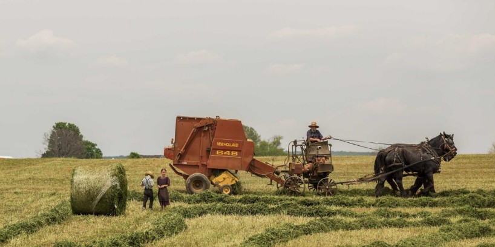

Travel Writing Sydney, Australia
Sydney: The Harbour City

Sydney, locally known as the Harbour city, happens to be the oldest, largest and the most beautiful city in Australia. With its daytimes brimming with a clear sky and tall skyscrapers and the neon lights engulfing the dark of the nights, the city has been noted as one of the most aesthetically pleasing and liveable cities on the planet. The heavy immigration that has continued for centuries has further contributed to making it one of the most culturally diverse metropolitans not only in Australia, but the world.
The history of the city goes far back, much before the European settlers showed up. The excavations have given the researchers enough evidence to conclude that the area was a habitat for the earlier humans about 50,000 years ago.
Truly, Sydney is like one distant dream of a city, swarming with monuments, reminiscent of the medieval times architecture combined with the modern architectural artistry. Let's take a look at the different attractions that may be of interest for the ones who are about to visit the city for the first time-
The Sydney harbour bridge happens to be the pride of the city. The masterfully designed bridge crosses from North Sydney to The Rocks and serves as a prime for the tourists.
Opera House- Located in the city centre, Opera house is praised as one of the most dazzlingly thought out architectural marvel.
Sydney Tower- Also there in the city centre, this is the tallest tower in the entire city. One of the biggest tourist attractions, the tower gives a magnificent 360 degrees view of the entire city.
And this is just the tip of the iceberg.
Best Time to Visit
Generally speaking, there is no specific time in a year that is best to visit the city, because technically the weather remains the same. The kind sun shines bright for about 300 days a year, so the climate is more or less warm and charming at all times.
But in case you want specific details, the summers shall be the time when you should really plan your holidays. There is a reason for that. Beaches are the best things about a brief holiday period in Sydney. On an average day in summers, the temperature sets itself up comfortably at 26 degrees which is just perfect for an outing in the beautiful sands with the calm blue Indian Ocean right there, transporting you to a beautiful dimension of the world. Whether it's a day out at beach or enjoying the nightlife, there is no perfect time than the summers. The sun shines in the clear sky in all its shiny glory as the golden sand on the beach glimmers from it, which is a feeling only the ones who have been there can identify with.
Sydney Airport
The only major airport in the Harbour city is the Sydney international airport, also known as Kingsford Smith Airport. It happens to be located about 8 kilometres from the city centre in the city of Mascot. Qantas has the airport as its primary hub while Jetstar Airways and Virgin Australia are having the Sydney airport as their secondary Hub. The huge airport happens to have three runaways.
This is also famous as the world's oldest commercial airport and also the busiest airport in the country. That's not quite an overstatement as it serves about 43 international destinations and 46 domestic ones directly.
So yeah, this is Sydney. The people are welcoming, the beaches pleasant, the sun brighter, and everything just falls right into place when you are here.